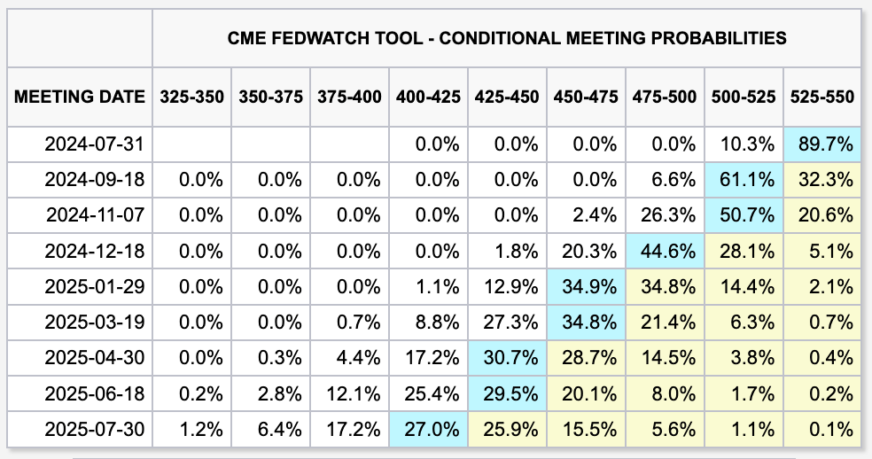

미국 5월 PCE도 잘 나온 듯
경제
//
2024년 06월 28일 작성
오늘은 대명절(?)인 PCE가 발표되는 날이다. 물론 미국이고 5월달 지표다. 대충 요렇게 나왔다.
- 헤드라인 PCE MoM 0% (-0.3%), YoY 2.6% (-0.1%)
- 근원 PCE MoM 0.1% (-0.2%), YoY 2.6% (-0.2%)
전부 예상에 부합했다. 심지어 근원 PCE MoM의 전달 수치가 상향 조정되면서 더 극적인 연출이 이뤄진 느낌이다. 물론 완전히 0은 아니고 반올림이 이뤄지면서 0으로 표시된 것 뿐이겠지만 말이다.
이와중에 개인지출이나 개인소득도 전달 대비 더 늘어나서 미묘하면서도 좋은 분위기를 만들어 줄 것 같은 느낌적인 느낌이다.
현재로써는 주식시장 선물시장도 나쁘지 않은 반응이 나타나는 것 같다.
 FedWatch
일단 7월이나 9월 인하 확률이 살짝 높아진 것 같은 느낌이 드는데 이전 수치를 저장을 안 해놨더니 확실하진 않다.
어쨌든 좋은 느낌이다. 연준에게도 딱히 나쁜 느낌은 아닐 것 같기도 하다.